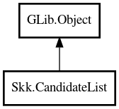

CandidateList
Object Hierarchy:

Description:
public abstract class CandidateList : Object
Base abstract class of candidate list.
Content:
Properties:
- public abstract int cursor_pos { get; }
Current cursor position.
- public abstract uint page_size { get; set; }
Page size.
- public abstract uint page_start { get; set; }
Starting index of paging.
- public abstract bool page_visible { get; }
Flag to indicate whether page (lookup table) is visible.
- public abstract int size { get; }
The number of candidate in the candidate list.
Methods:
- public abstract Candidate @get (int index = -1)
Get the current candidate at the given index.
- public abstract bool cursor_down ()
Move cursor to the next candidate.
- public abstract bool cursor_up ()
Move cursor to the previous candidate.
- public virtual bool next ()
Move cursor forward.
- public abstract bool page_down ()
Move cursor to the next page.
- public abstract bool page_up ()
Move cursor to the previous page.
- public virtual bool previous ()
Move cursor backward.
- public abstract void select ()
Select the current candidate.
- public abstract bool select_at (uint index_in_page)
Select a candidate in the current page.
Signals:
Inherited Members:
All known members inherited from class GLib.Object
- @get
- @new
- @ref
- @set
- add_toggle_ref
- add_weak_pointer
- bind_property
- connect
- constructed
- disconnect
- dispose
- dup_data
- dup_qdata
- force_floating
- freeze_notify
- get_class
- get_data
- get_property
- get_qdata
- get_type
- getv
- interface_find_property
- interface_install_property
- interface_list_properties
- is_floating
- new_valist
- new_with_properties
- newv
- notify
- notify_property
- ref_count
- ref_sink
- remove_toggle_ref
- remove_weak_pointer
- replace_data
- replace_qdata
- set_data
- set_data_full
- set_property
- set_qdata
- set_qdata_full
- set_valist
- setv
- steal_data
- steal_qdata
- thaw_notify
- unref
- watch_closure
- weak_ref
- weak_unref